#Name: Thomas Hunter
#Email: thomas.hunter1870@myhunter.cuny.edu
#Date: June 1, 2026
#This program prints: Hello, World!
print("Hello, World!")
Submit the following programs via Gradescope:
Write a program that prints "Hello, World!" to the screen.
Hint: See the Lab 1.
Write a program that draws an Octagon.
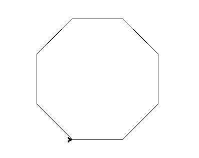
Hint: See the Lab 1.
Write a program that implements the pseudocode ("informal high-level description of the operating principle of a computer program or other algorithm") below:
Repeat 36 times:
Walk forward 100 steps
Turn left 145 degrees
Walk forward 10 steps
Turn right 90 degrees
Walk forward 10 steps
Turn left 135 degrees
Walk forward 100 steps
The result should look as follows:
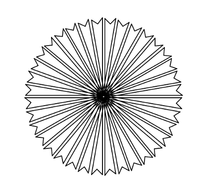
Write a program that will print "I love Python!" 25 times.
The output of your program should be:
I love Python! I love Python! I love Python! I love Python! I love Python! I love Python! I love Python! I love Python! I love Python! I love Python! I love Python! I love Python! I love Python! I love Python! I love Python! I love Python! I love Python! I love Python! I love Python! I love Python! I love Python! I love Python! I love Python! I love Python! I love Python!
Write a program that prints out the numbers from 0 to 14.
The output of your program should be:
0 1 2 3 4 5 6 7 8 9 10 11 12 13 14
Hint: Use a loop and print out the index or loop variable.
Using the string commands introduced in Lab 2, write a Python program that prompts the user for a message, and then prints the message, the message in upper case letters, and the message in lower case letters.
A sample run of your program should look like:
Enter a message: Mihi cura futuri Mihi cura futuri MIHI CURA FUTURI mihi cura futuri
Another run:
Enter a message: I love Python! I love Python! I LOVE PYTHON! i love python!
Hint: Your program should be able to take any phrase the user enters and prints it, it in upper case letters, and it in lower case letters. To do that, you need to store the phrase in a variable and print variations of the stored variable.
Write a program that prompts the user to enter a phrase and then prints out the ASCII code of each character in the phrase.
A sample run of your program should look like:
Enter a phrase: I love Python! In ASCII: 73 32 108 111 118 101 32 80 121 116 104 111 110 33
And another sample run:
Enter a phrase: ABC In ASCII: 65 66 67
Hint: If c is a character, ord(c) returns its ASCII code. For example, if c is 'I', then ord(c) returns 73. See Lab 2.
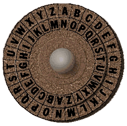
Write a program that prompts the user to enter a word and then prints out the word with each letter shifted right by 13. That is, 'a' becomes 'n', 'b' becomes 'o', ... 'y' becomes 'l', and 'z' becomes 'm'.
Assume that all inputted words are in lower case letters: 'a',...,'z'.
A sample run of your program should look like:
Enter a word: zebra Your word in code is: mroen
Hint: See the example programs from Lecture 2.
Write a program that implements the pseudocode below:
For i = 5, 10, 15, 20, 25, ... ,300:
Walk forward i steps
Turn left 91 degrees
Your output should look similar to:
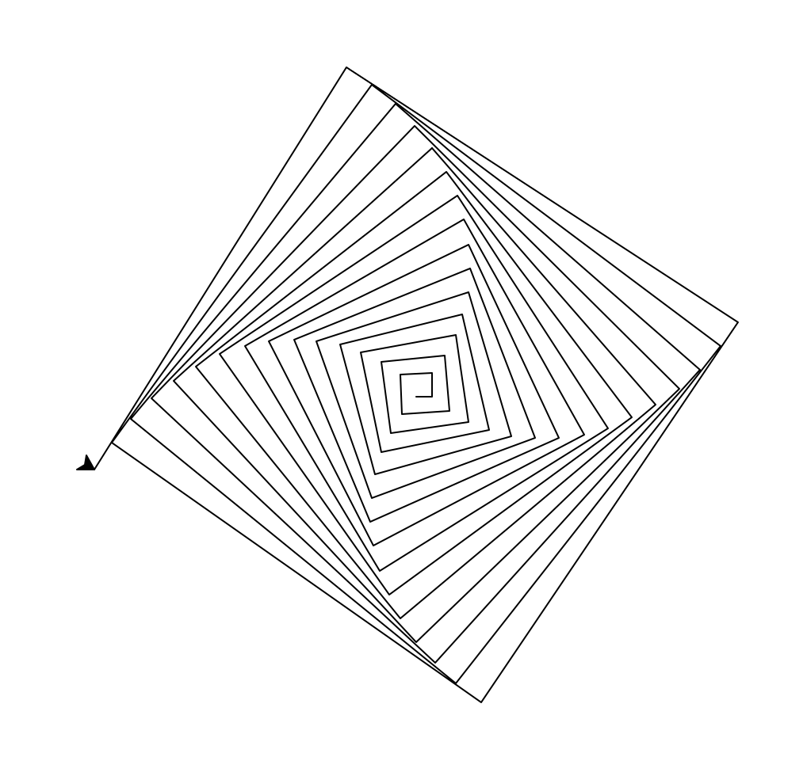
Hint: See examples of range(start,stop,step) in Lecture 2 notes.
Modify the program from Lab 3 to show the shades of blue.
Your output should look similar to:
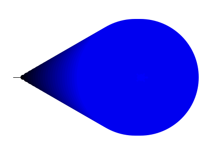
Write a program that asks the user for the hexcode of a color and then displays a turtle that color.
A sample run of your program should look like:
Enter a hex string: #A922A9
and the output should look similar to:
Hint: See Section 4.3 for setting the background color and Lab 3 for colors.
Write a program that asks the user for a name of an image .png file and the name of an output file. Your program should create a new image that has only the blue channel of the original image.
A sample run of your program should look like:
Enter name of the input file: csBridge.png Enter name of the output file: blueH.png
Sample input and resulting output files:
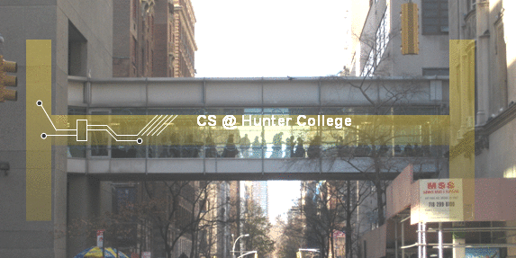
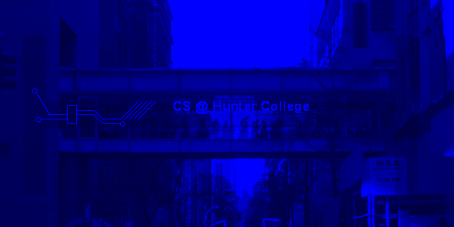
Note: before submitting your program for grading, remove the commands that show the image (i.e. the ones that pop up the graphics window with the image). The program is graded on a server on the cloud and does not have a graphics window, so, the plt.show() and plt.imshow() commands will give an error. Instead, the files your program produces are compared pixel-by-pixel to the answer to check for correctness.
Hint: See Lab 3.
Write a program that asks the user for a message and then prints the message out, two copies of each character per line.
A sample run of your program should look like:
Enter a message: I love Python! I I l l o o v v e e P P y y t t h h o o n n ! !
Hint: See Lab 2 or Lecture 2 notes.
1. Prompt the user to enter a string and call it s.
2. Let ls be the length of s.
3. For i from 0 upto ls-1:
4. Print s[0:i]
5. For i from 0 upto ls-1:
6. Print s[i:ls]
5. Print a closing statement
A sample run of your program should look like:
Enter string: a man a plan a canal panama a a a m a ma a man a man a man a a man a a man a p a man a pl a man a pla a man a plan a man a plan a man a plan a a man a plan a a man a plan a c a man a plan a ca a man a plan a can a man a plan a cana a man a plan a canal a man a plan a canal a man a plan a canal p a man a plan a canal pa a man a plan a canal pan a man a plan a canal pana a man a plan a canal panam a man a plan a canal panama man a plan a canal panama man a plan a canal panama an a plan a canal panama n a plan a canal panama a plan a canal panama a plan a canal panama plan a canal panama plan a canal panama lan a canal panama an a canal panama n a canal panama a canal panama a canal panama canal panama canal panama anal panama nal panama al panama l panama panama panama anama nama ama ma a Thank you for using my program!
Write a program that asks the user for 5 whole (integer) numbers. For each number, turn the turtle left the degrees entered and then the turtle should move forward 100.
A sample run of your program should look like:
Enter a number: 270 Enter a number: 100 Enter a number: 190 Enter a number: 200 Enter a number: 80
and the output should look similar to:
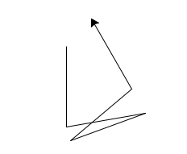
Create a program that creates a image of red and white stripes. Your program should ask the user for the size of your image, the name of the output file, and create a .png file of stripes. For example, if the user enters 10, your program should create a 10x10 image, alternating between red and white stripes.
A sample run of the program:
Enter the size: 13 Enter output file: stripes13.png
Another sample run of the program:
Enter the size: 50 Enter output file: stripes50.png
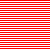
Note: before submitting your program for grading, remove the commands that show the image (i.e. the ones that pop up the graphics window with the image). The program is graded on a server on the cloud and does not have a graphics window, so, the plt.show() and plt.imshow() commands will give an error. Instead, the files your program produces are compared pixel-by-pixel to the answer to check for correctness.
Hint: See notes from Lecture 4.
Write a program that implements the pseudocode below:
1. Ask the user for the number of hours until the weekend. 2. Print out the days until the weekend (days = hours // 24) 3. Print out the leftover hours (leftover = hours % 24)
A sample run of your program should look like:
Enter number of hours: 27 Days: 1 Hours: 3
and another sample run:
Enter number of hours: 52 Days: 2 Hours: 4
Hint: See Section 2.7.
Following Lab 5, write a program that asks the user for the name of a png file and print the number of pixels that are nearly white (the fraction of red, the fraction of green, and the fraction of blue are all above 0.75).
For example, if your file was of the snow pack in the Sierra Nevada mountains in California in September 2014:
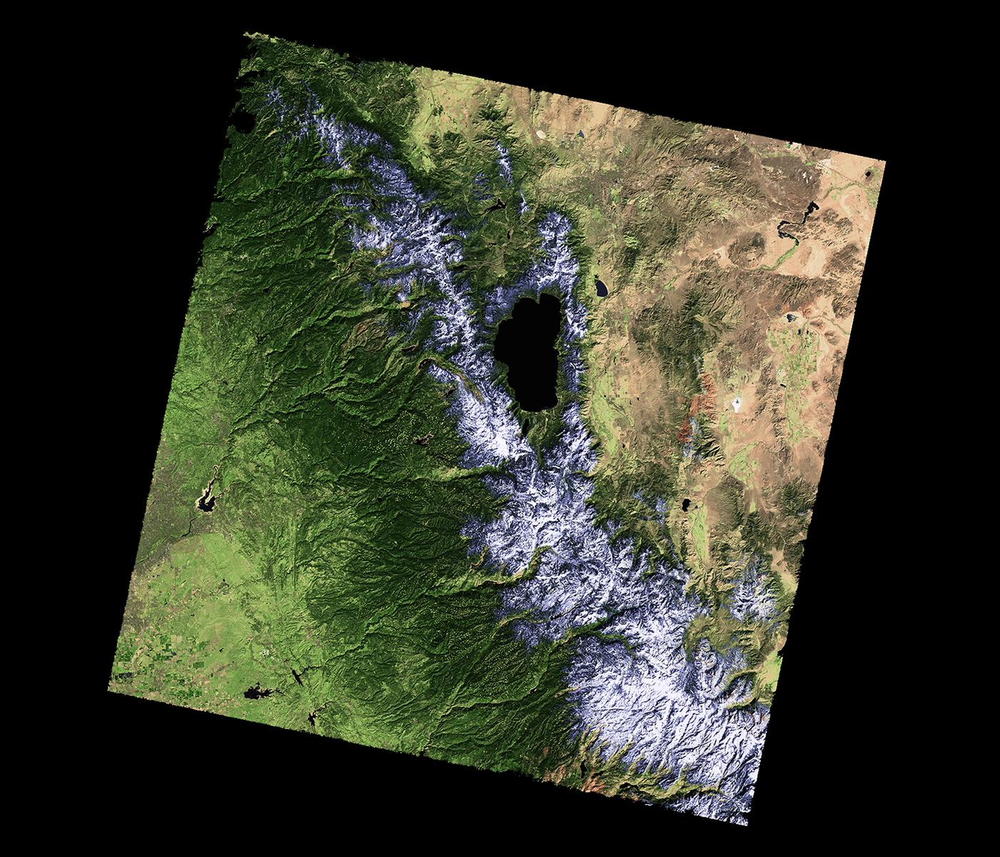
then a sample run would be:
Enter file name: caDrought2014.png Snow count is 38010
Note: for this program, you only need to compute the snow count. Showing the image will confuse the grading script, since it's only expecting the snow count.
Write a logical epxression that is equivalent to the circuit that computes the majority of 3 inputs, called in1, in2, in3:
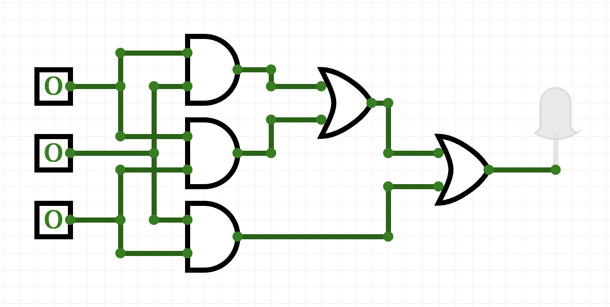
Save your expression to a text file. See Lab 5 for the format for submitting logical expressions to Gradescope.
Write a program that asks the user for a list of nouns (separated by spaces) and approximates the fraction that are plural by counting the fraction that end in "s". Your program should output the total number of words and the fraction that end in "s". Assume that words are separated by spaces (and ignore the possibility of tabs and punctuation between words.)
A sample run of the program:
Enter nouns: apple bananas cantalopes durian Number of words: 4 Fraction of your list that is plural is 0.5
And another sample run of the program:
Enter nouns: hats gloves coats glasses scarves Number of words: 5 Fraction of your list that is plural is 1.0
Hint: Break this problem into pieces:
Implement (and test!) each part and then go on to the next. See notes from Lecture 3.
The program turtleString.py takes a string as input and uses that string to control what the turtle draws on the screen (inspired by code.org's graph paper programming). Currently, the program processes the following commands:
Modify this program to allow the user also to specify with the following symbols:
Hint: See Lecture 4 notes.
Build a circuit that has the same behavior as a nor gate (i.e. for the same inputs, gives identical output) using only and, or, and not gates.
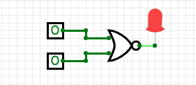
Save your expression to a text file. See Lab 5 for the format for submitting logical expressions to Gradescope.
Modify the program from Lab 6 that displays the NYC historical population data. Your program should ask the user for the borough, an name for the output file, and then display the fraction of the population that has lived in that borough, over time.
A sample run of the program:
Enter borough name: Queens Enter output file name: qFraction.png
The file qFraction.png:
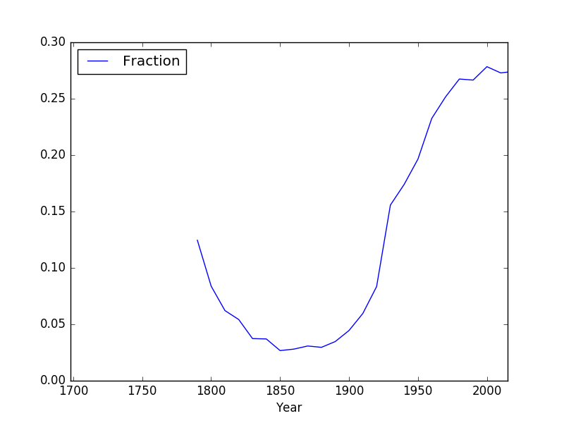
Note: before submitting your program for grading, remove the commands that show the image (i.e. the ones that pop up the graphics window with the image). The program is graded on a server on the cloud and does not have a graphics window, so, the plt.show() and plt.imshow() commands will give an error. Instead, the files your program produces are compared pixel-by-pixel to the answer to check for correctness.
Write a program that computes the minimum, average, and maximum population over time for a borough (entered by the user). Your program should assume that the NYC historical population data file, nycHistPop.csv is in the same directory.
A sample run of your program:
Enter borough: Staten Island Minimum population: 727 Average population: 139814.23076923078 Maximum population: 474558
and another run:
Enter borough: Brooklyn Minimum population: 2017 Average population: 1252437.5384615385 Maximum population: 2738175
Hint: See Lab 6.
Write an Unix shell script that prints Hello, World to the screen.
Submit a single text file containing your shell commands. See Lab 6 for details.
In Lab 6, you created a github account. Submit a text file with the name of your account. The grading script is expecting a file with the format:
#Name: Your name #Date: March 2022 #Account name for my github account AccountNameGoesHere
Note: it takes a few minutes for a newly created github account to be visible. If you submit to gradescope and get a message that the account doesn't exist, wait a few minutes and try again.
Modify the program from Lab 7 that displays shelter population over time to:
A sample run of the program:
Enter name of input file: DHS_Daily_Report.csv Enter name of output file: dhsPlot.png
which produces an output:
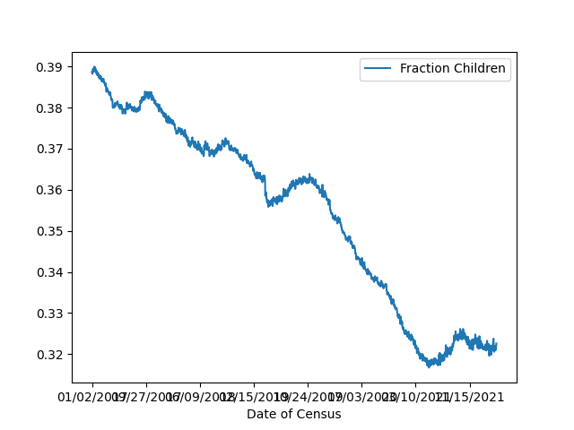
Note: The grading script is expecting that the label (i.e. name of your new column) is "Fraction Children".
Write a program, using a function main() that prints "Hello, World!" to the screen. See Lab 7.
Write a program that asks the user for the name of an image, the name of an output file. Your program should then save the lower left quarter of the image to the output file specified by the user.
A sample run of your program should look like:
Enter image file name: hunterLogo.png Enter output file: logoLL.png
which would have as input and output:
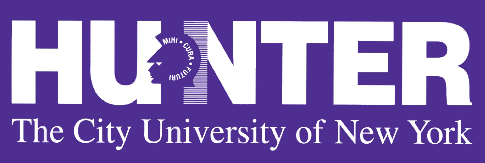
Hint: See sample programs from Lectures 4 and 6.
Note: before submitting your program for grading, remove any commands that show the image (i.e. the ones that pop up the graphics window with the image). The program is graded on a server on the cloud and does not have a graphics window, so, the plt.show() and plt.imshow() commands will give an error. Instead, the files your program produces are compared pixel-by-pixel to the answer to check for correctness.
Write a program that prompts the user to enter a list of names. Each person's name is separated from the next by a semi-colon and a space ('; ') and the names are entered lastName, firstName (i.e. separated by ', '). Your program should then print out the names, one per line, with the first names first followed by the last names.
A sample run of your program should look like:
Please enter your list of names: Epstein, Susan; St. John, Katherine; Vazquez-Abad, Felisa; Xu, Jia; Zamfirescu, Christina
You entered:
Susan Epstein
Katherine St. John
Felisa Vazquez-Abad
Jia Xu
Christina Zamfirescu
Thank you for using my name organizer!
Hint: See Section 10.25 for a quick overview of split(). Do this problem in parts: first, split the list by person (what should the delimiter be?). Then, split each of person's name into first and last name (what should the delimiter be here?).
Write a program that asks the user for the hour of the day (in 24 hour time), and prints
A sample run:
Enter hour (in 24 hour time): 11 Good Morning
Another sample run:
Enter hour (in 24 hour time): 20 Good Evening
And another run:
Enter hour (in 24 hour time): 15 Good Afternoon
Modify the parking ticket program from Lab 8 to do the following:
A sample run:
Enter file name: Parking_Violations_Jan_2016.csv Enter attribute: Vehicle Color The 10 worst offenders are: WHITE 2801 WH 2695 GY 1420 BK 1153 BLACK 1054 BROWN 727 BL 656 GREY 574 SILVE 450 BLUE 412 Name: Vehicle Color, dtype: int64
And another run:
Enter file name: Parking_Violations_Jan_2016.csv Enter attribute: Vehicle Year The 10 worst offenders are: 0 3927 2015 1265 2014 1143 2013 1105 2012 772 2011 666 2007 643 2008 559 2010 509 2006 499 Name: Vehicle Year, dtype: int64
Logical gates can be used to do arithmetic on binary numbers. For example, we can write a logical circuit whose output is one more than the inputted number. Our inputs are in1 and in2 and the outputs are stored in out1, out2, and out3.
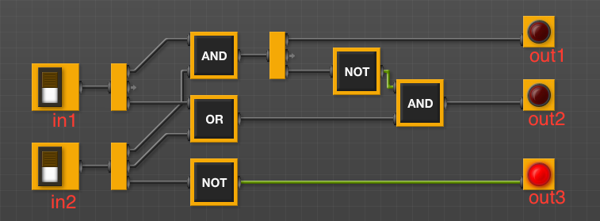
(click to launch new window with circuit)
Here is a table of the inputs and outputs:
| Inputs | Outputs | |||||
|---|---|---|---|---|---|---|
| Decimal Number | in1 | in2 | Decimal Number | out1 | out2 | out3 |
| 0 | 0 | 0 | 1 | 0 | 0 | 1 |
| 1 | 0 | 1 | 2 | 0 | 1 | 0 |
| 2 | 1 | 0 | 3 | 0 | 1 | 1 |
| 3 | 1 | 1 | 4 | 1 | 0 | 0 |
Submit a text file with each of the outputs on a separate line:
#Name: YourNameHere #Date: November 2017 #Logical expressions for a 4-bit incrementer out1 = ... out2 = ... out3 = ...Where "..." is replaced by your logical expression (see Lab 5).
Note: here's a quick review of binary numbers.
Fill in the missing function, monthString(), in the program, months.py (available at: https://github.com/stjohn/csci127). The function should take number between 1 and 12 as a parameter and returns the corresponding month as a string. For example, if the parameter is 1, your function should return "January". If the parameter is 2, your function should return out "February", etc.
Note: The grading scripts are expecting that your function is called monthString(). You need to use that name, since instead of running the entire program, the scripts are "unit testing" the function-- that is, calling that function, in isolation, with differrent inputs to verify that it performs correctly.
Hint: See notes from Lecture 7 and Lab 8.
Write a program that asks the user for a CSV of collision data (see note below about obtaining reported collisions from NYC OpenData). Your program should then list the top three contributing factors for the primary vehichle of collisions ("CONTRIBUTING FACTOR VEHICLE 1") in the file.
A sample run:
Enter CSV file name: collisionsNewYears2016.csv Top three contributing factors for collisions: Driver Inattention/Distraction 136 Unspecified 119 Following Too Closely 37 Name: CONTRIBUTING FACTOR VEHICLE 1, dtype: int64
This assignment uses collision data collected and made publicly by New York City Open Data, and can be found at:
https://data.cityofnewyork.us/Public-Safety/NYPD-Motor-Vehicle-Collisions/h9gi-nx95.Since the files are quite large, use the "Filter" option and choose your birthday in 2016 and "Export" (in CSV format) all collisions for that day. We will use this data set for future programs, so, instead of downloading the test files multiple times, save a copy for future use.
Hint: See Lab 8 for accessing and analyzing structured data.
Write two functions, triangle() and nestedTriangle(). Both functions take two parameters: a turtle and an edge length. The pseudocode for triangle() is:
triangle(t, length):
1. If length > 10:
2. Repeat 3 times:
3. Move t, the turtle, forward length steps.
4. Turn t left 120 degrees.
5. Call triangle with t and length/2.
The pseudocode for nestedTriangle() is very similar:
nestedTriangle(t, length):
1. If length > 10:
2. Repeat 3 times:
3. Move t, the turtle, forward length steps.
4. Turn t left 120 degrees.
5. Call nestedTriangle with t and length/2.
A template program, nestingTrianges.py, is available on the CSci 127 repo on github. The grading script does not run the whole program, but instead tests your function separately ('unit tests') to determine correctness. As such, the function names must match exactly (else, the scripts cannot find it). Make sure to use the function names from the github program (it is expecting triangle() and nestedTriangle()).
A sample run:
Enter edge length: 160
which would produce:
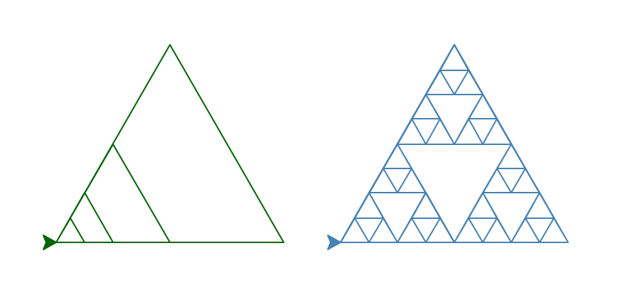
Write a function, computeFare(), that takes as two parameters: the zone and the ticket type, and returns the Long Island Railroad fare.
A template program, LIRRtransit.py, is available on the CSci 127 repo on github. The grading script does not run the whole program, but instead tests your function separately ('unit tests') to determine correctness. As such, the name of the function must match exactly (else, the scripts cannot find it).
A sample run:
Enter the number of zones: 4 Enter the ticket type (peak/off-peak): off-peak The fare is 8.75
And another:
Enter the number of zones: 6 Enter the ticket type (peak/off-peak): peak The fare is 13.5
Hint: See Lab 8.
Queens Library Branches Map
New York City Open Data makes data for the Queens Library branches publicly available. A sample file, Queens_Library_Branches.csv was downloaded and can be used to test your program.
Using Plotly Express (see Lab 9), write a program that asks the user for the name of a CSV file, name of the output file, and creates a map with markers for all the Queens Library branches from the input file. When the user hovers over the marker, the Neighborhood Tabulation Area (NTA) should appear in the pop-up box.
A sample run:
Enter CSV file name: Queens_Library_Branches.csv
Enter output file: libraryMap.htmlwhich would produce the HTML file:
When running your program locally, you need to check that the "Latitude" and "Longitude" values are non-empty. You can drop any row where there's empty values with:
df_cleaned = df.dropna()Using folium (see Lab 9), write a program that asks the user for the name of a CSV file, name of the output file, and creates a map with markers for all the traffic collisions from the input file.
A sample run:
Enter CSV file name: collisionsThHunterBday.csv Enter output file: thMap.html
which would produce the html file:
(The demo above is for March 18, 2016 using the time the collision occurred ("TIME") to label each marker and changed the underlying map with the option: tiles="Cartodb Positron" when creating the map.)
This assignment uses collision data collected and made publicly by New York City Open Data. When creating datasets to test your program, you will need to filter for both date (to keep the files from being huge) and that there's a location entered. The former is explained above; to check the latter, add the additional filter condition of "LONGITUDE is not blank".
Hint: For this data set, the names of the columns are "LATITUDE" and "LONGITUDE" (unlike the previous map problem, where the data was stored with "Latitude" and "Longitude").
The program, errorsHex.py, has lots of errors. Fix the errors and submit the modified program.
Hint: See Lab 9.
Fill in the following functions in a program that maps GIS data from NYC OpenData CSV files and marks the current location and closest point:
(x1-x2)2 + (y1-y2)2
A sample run to find the closest CUNY campus to the Brooklyn Navy Yard:
Enter CSV file name: cunyLocations.csv Enter column name for latitude: Latitude Enter column name for longitude: Longitude Enter current latitude: 40.7021 Enter current longitude: -73.9708 Enter output file: closestCUNY.html
which would produce the html file:
A template program, closestPoint.py, is available on the CSci 127 repo on github. The grading script does not run the whole program, but instead runs each of your functions separately ('unit tests') to determine correctness. As such, the names of the functions must match exactly the ones listed above (else, the scripts cannot find them).
Hint: See Lab 9.
Fill in the missing functions:
The functions are part of a program that averages smaller and smaller regions of an image until the underlying scene is visible (inspired by the elegant koalas to the max).
For example, if you inputted our favorite image, you would see (left to right):
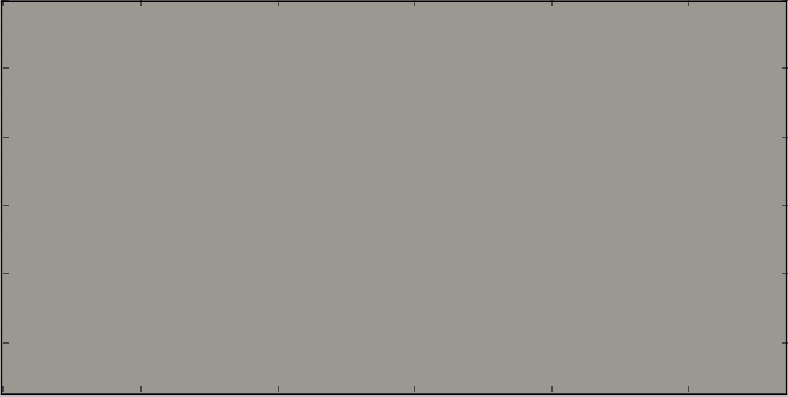
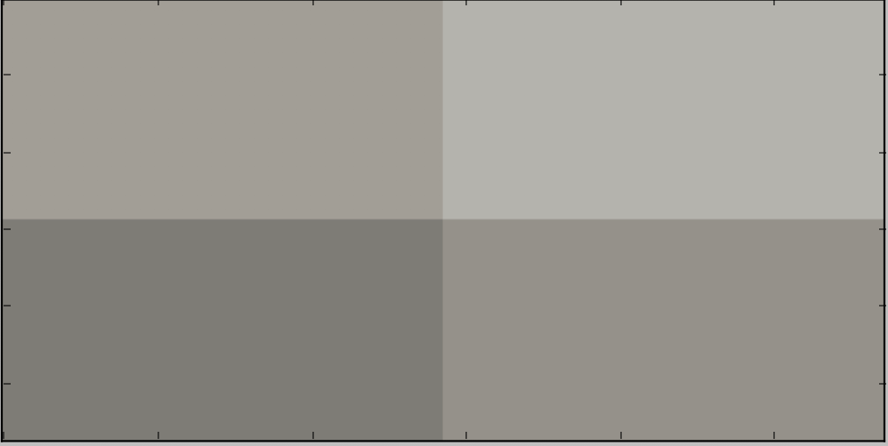
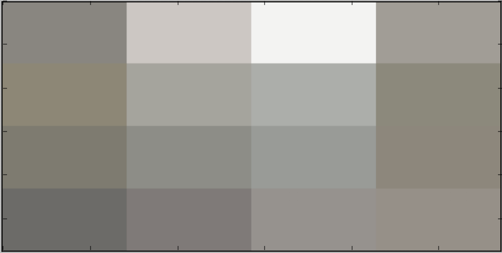
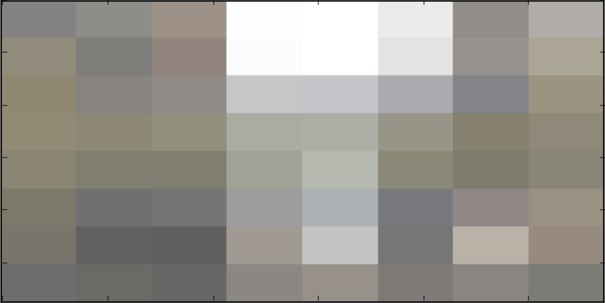
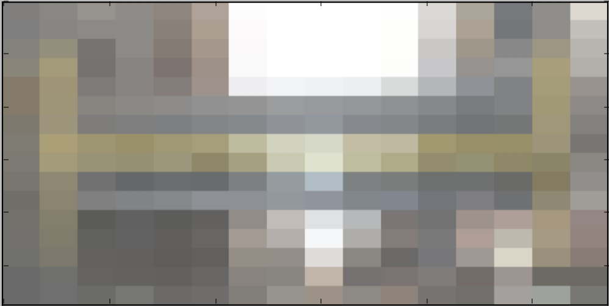
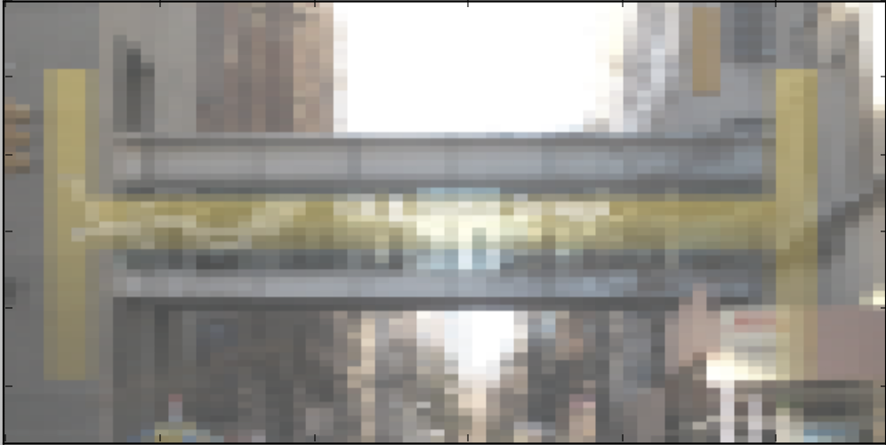
and finally:
A template program, averageImage.py, is available on the CSci 127 repo on github. The grading script does not run the whole program, but instead runs each of your functions separately ('unit tests') to determine correctness. As such, the names of the functions must match exactly the ones listed above (else, the scripts cannot find them).
Hint: See notes from Lecture 8.
Modify the program from Lab 10 that makes a turtle walk 100 times. Each "walk" is 10 steps forward and the turtle can turn 0,1,2,...,359 degrees (chosen randomly) at the beginning of each walk.
A sample run of your program:
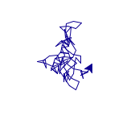
Write a program that asks the user to enter a string. If the user enters an empty string, your program should continue prompting the user for a new string until they enter a non-empty string. Your program should then print out the string entered.
A sample run of your program:
Enter a non-empty string: That was empty. Try again. Enter a non-empty string: That was empty. Try again. Enter a non-empty string: Mihi cura futuri You entered: Mihi cura futuri
Hint: See Lab 10.
Write an Unix shell script that does the following:
Hint: See Lab 10.
Write a simplified machine language program that prints: Hello, World!
See Lab 11 for details on submitting the simplified machine language programs.
Hint: You may find the following table useful:
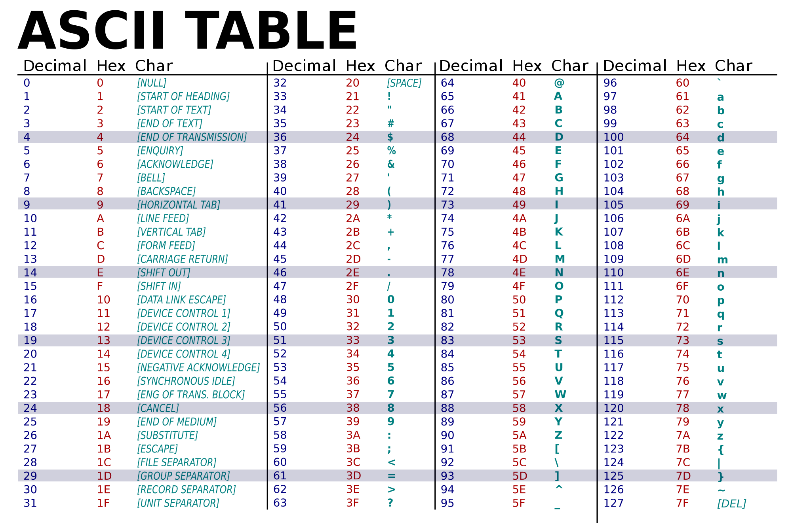
Hint: The grading scripts are matching the phrase exactly, so, you need to include the spacing and punctuation.
Write a simplified machine language program that has register $s0 loop through the numbers 0, 5, 10, ..., 50.
See Lab 11 for details on submitting the simplified machine language programs.
Using Unix shell commands, write a script that counts the number of .py files in current working directory.
Hint: See Lab 11.
Write a C++ program that prints "Hello, World!" and "Hello, C++!" in two separate lines to the screen.
Hint: See Lab 12 for getting started with C++.
Write a C++ program that will print "Mihi cura futuri" 10 times.
The output of your program should be:
Mihi cura futuri Mihi cura futuri Mihi cura futuri Mihi cura futuri Mihi cura futuri Mihi cura futuri Mihi cura futuri Mihi cura futuri Mihi cura futuri Mihi cura futuri
Hint: See Lab 12 for getting started with C++.
Write a C++ program program that asks the user for a number and draws a triangle of that height and width using 'character graphics'.
A sample run:
Enter a number: 6 * ** *** **** ***** ******
Another sample run:
Enter a number: 3 * ** ***
Write a C++ program that asks the user for the month of the year (as a number), and prints
A sample run:
Enter month (as a number): 12 Happy Winter
Another sample run:
Enter month (as a number): 8 Happy Summer
And another run:
Enter month (as a number): 11 Happy Fall
Write a C++ program that asks the user for the year born, and continue asking until the number entered that is 2018 or earlier.
A sample run:
Please enter year born: 2023 Entered a future year Please enter year born: 2025 Entered a future year Please enter year born: 2000 You entered: 2000
Hint: See Lab 10 for similar programs in Python. Rewrite in C++.
Write a complete C++ program that prints the change in population of the the United States:
p = p + Bp - Dp
where p is the population, B is the birth rate of 12.4 births for every 1000 people (12.4/1000) each
year, and D is the death rate of 8.4 for every 1000 people (8.4/1000). In 2017, the population
of United States was 325.7 million. Your program should ask the user for the number of years and print expected population over those years starting from 2017. Each line should have: the year and the population (in millions).
A sample run:
Please enter the number of years: 10 Year 2017 325.70 Year 2018 327.00 Year 2019 328.31 Year 2020 329.62 Year 2021 330.94 Year 2022 332.27 Year 2023 333.60 Year 2024 334.93 Year 2025 336.27 Year 2026 337.61
Note: if you would like to make the output a bit prettier, you can include a command to limit the number of places after the decimal point printed to 2 before you print:
cout << setprecision(2) << fixed;
Write a C++ program that asks the user for a whole number between -31 and 31 and prints out the number in "two's complement" notation, using the following algorithm:
A sample run:
Enter a number: 8 001000
Another run:
Enter a number: -1 111111